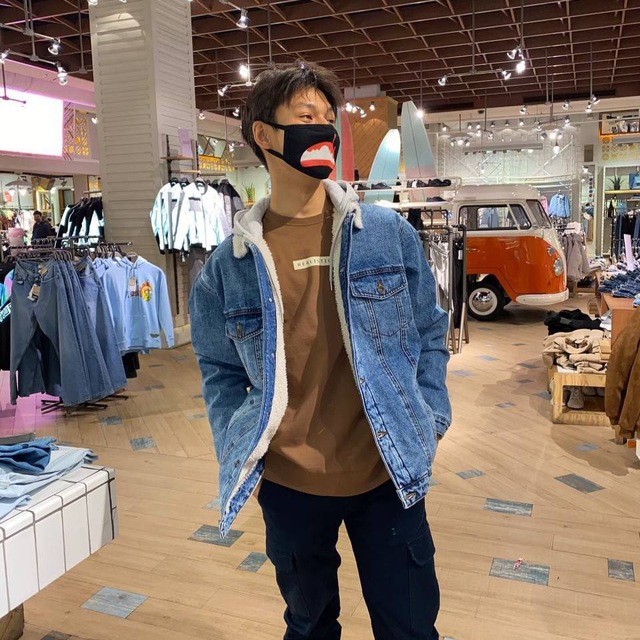

Raiymbek - this name was given to me by my grandmother. It was given in honor of famous kazakh batyr. I was born on 8th April, 2003. I've been living in Almaty since i was born.
I am the youngest amongst children in my family. I have two big sisters and mother.
Fun fact is that middle sister is 14 years older than me.
I graduated from school number 49. It is a weak school. At school time my favourite subject was math. And i'm very glad i studied english before graduating.
At mid of 10th grade I enrolled in courses for preparing to UNT. On final UNT I got 128 points and won competetion for the highest result inside the educational center.
First semester of the first year was full online. This is such a shame. I only met other students on the second semester. We had half offline format though. But now we finally are inside the walls of our univesity, but we are much busier right now.
Second year was more exciting in terms of subjects and student life. We had a lot of parties, I made a lot of friends.
Now we finally are inside the walls of our univesity, but we are much busier right now.
At the summer after finishing first course at university I started studying HTML and CSS. I passed course on Stepik and started exploring JavaScript.
At the November of last year I was accepted to internship as frontend developer at outsource company called Elefanto. There I learned my first JS framework - Vue.js. After 5 months I finished my first real project.
Parallel to working in Elefanto and studying, I submitted to ChocoDev Internship program and was accepted with other 39 people. At the end of this program, 20 people got offers and I was one of these people. Next three months I worked in Aviata. Unfortunately, I couldn't stay there due to their financial state.
Since june of this year i've been working in 1Fit team as junior frontend developer. I like this company a lot and want to grow here.
I am sporty guy. I like playing football, basketball, volleyball. At summer each evening I go cycling. At winter I love hanging out on Medeo ice ring. At school time I was actively participating at swimming competetions as I was doing it for three years.
I like playing guitar, but I don't have enough time for this since I started working.
Before entering university I was kind of nerd because I was spending a lot of time playing computer games such as CS:GO, GTA V and a lot of other online games.
| Name | Вконтакте | Мой мир :)) |
|---|